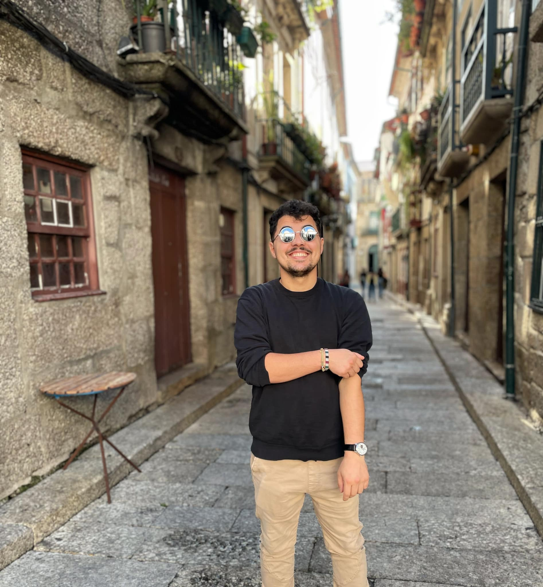
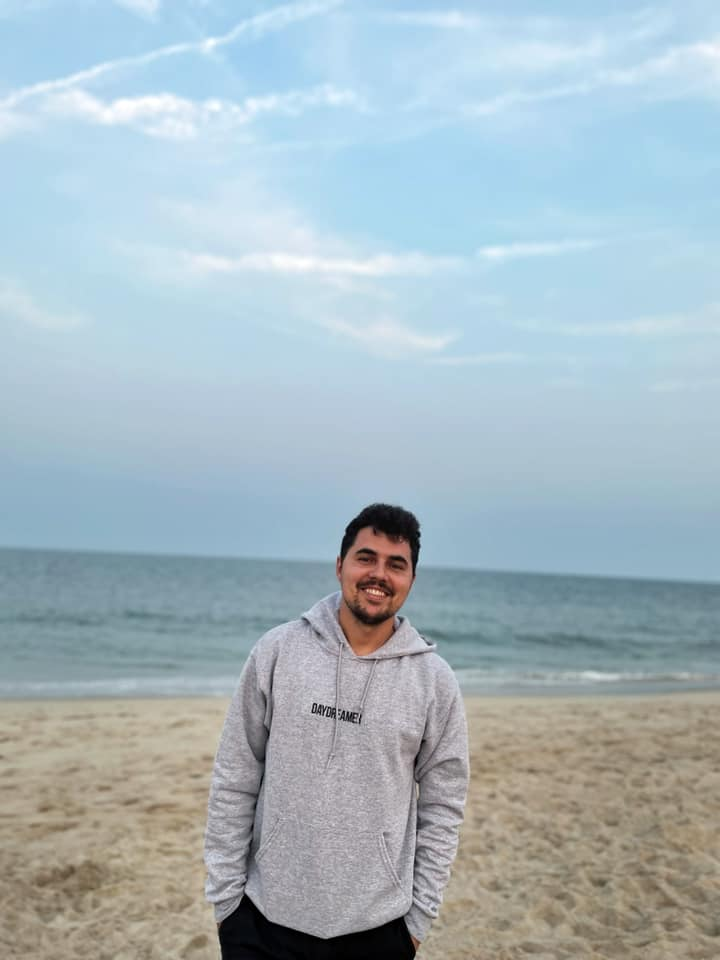
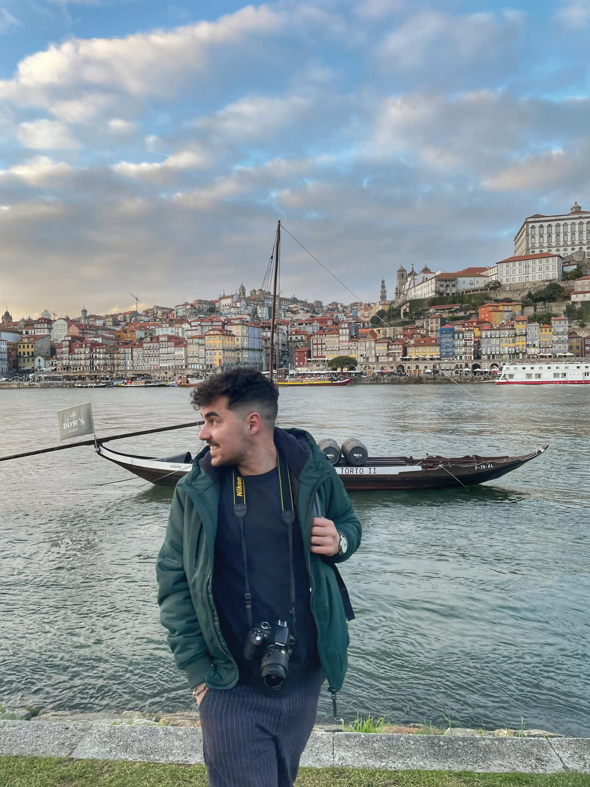
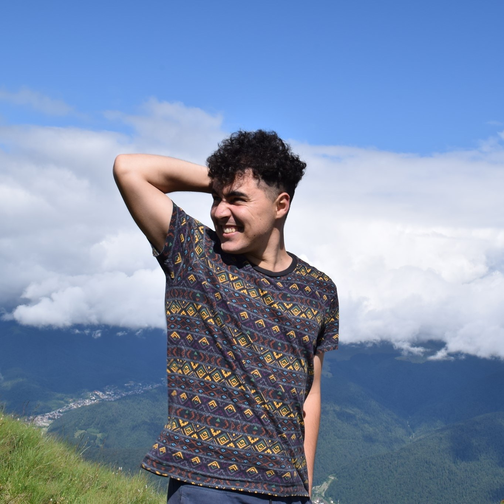
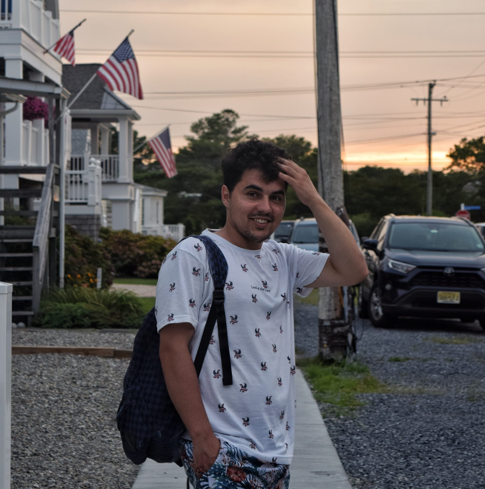
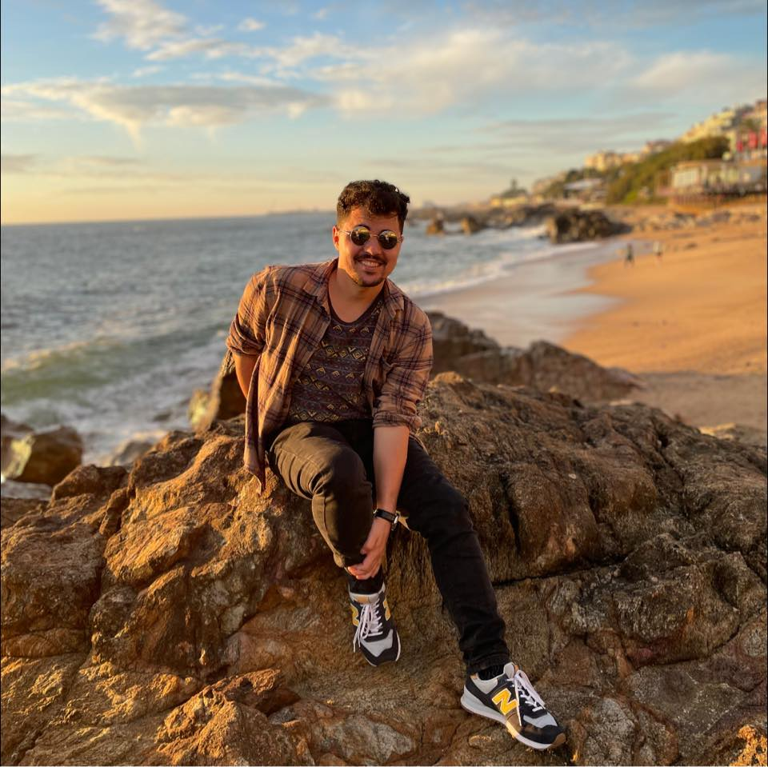
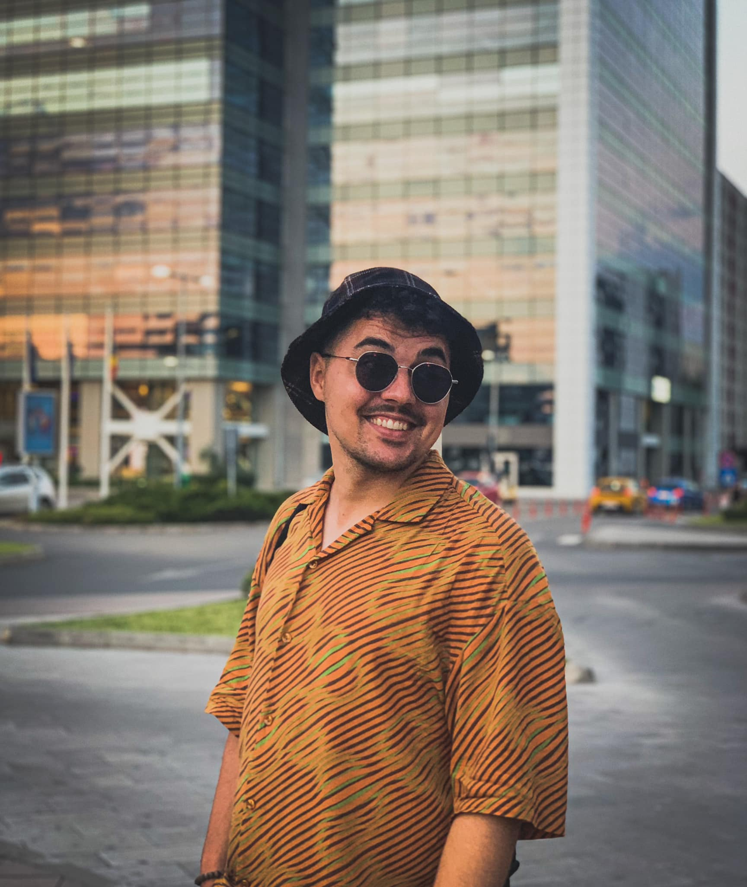

Hello! Welcome on my page!
About me
Currently I'm a Design Engineer, with a background in Industrial Engineering, experience with Additive Manufacturing and Site Design in Telecommunications.









What I love the most is to travel. I love discovering new cities, and meet new people. I love reading a good book, spending time with my girlfriend and my friends. I love to watch a good theater or opera show. I love my cat and my sister. I enjoy the simple things in life. I love taking a nap in the middle of the day when I feel tired, or just to watch the sunset from my balcony. I love to play football as well as watching my favorite football team playing against some strong teams in Premier League.
I've been to Portugal for a few months, as an Erasmus Student. Porto is one of the most charming places in the world for me. I call myself lucky for having the chance to live there for almost half a year.
Another city I felt in love with is Madrid. Way better than I expected, it's my favorite city in all of Spain. Of course, I love Andalucia, with its Sevilla, Granada, Cordoba and Malaga, all astonishing cities, but what was the purpose of my journey to Spain? I've been enrolled in an Erasmus Internship for about three months.
When I was a student, I've traveled to the United Stated for a few months, first time in 2018, and the last time in 2021. It's been my first huge experience, as well as my first flight, Bucharest-Amsterdam-Chicago. How cool is that!?
Now I am dreaming about a tiny house, somewhere in the woods, near a river, with lots of birds singing every morning. But first, I have to go through this perios in which I'm focused on learning a lot and discovering my paths through programming languages. It's a though one, but it will definitely worth it!